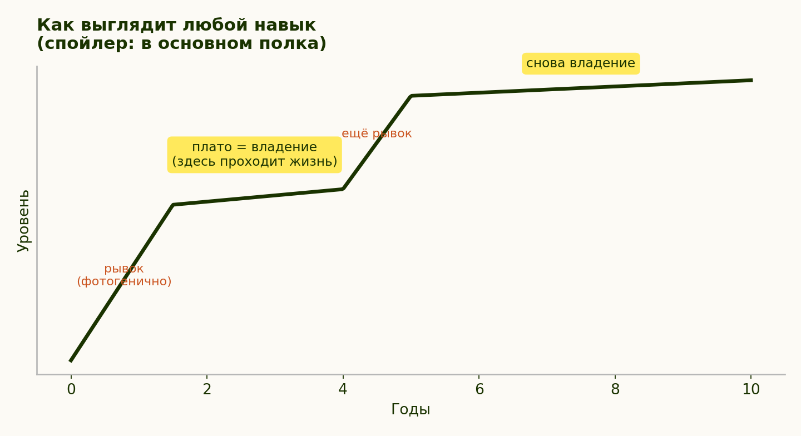

Модуль 4. Плато: мастерство выглядит как застой
Глава 6 из 14 · 7 мин чтения
Идея
Культ роста рисует жизнь восходящей кривой: каждый год лучше предыдущего, а иначе ты стоишь. Но если ты хоть раз чему-нибудь всерьёз учился, то знаешь, что так не бывает. Сначала быстро, потом долго никак. В развитии некоторых навыков встречаются периоды быстрого улучшения и плато, хотя единой кривой для любого навыка нет. Плато может занимать значительную часть обучения.
Есть и вторая причина, по которой рост не приносит обещанного: гедонистическая адаптация. По-русски — привыкание. Новая зарплата радует ровно до того дня, когда становится просто зарплатой; новая квартира — пока не превратится в просто дом. После некоторых изменений новизна ощущений со временем ослабевает; срок и глубина адаптации различаются, а новая зарплата, форма и навык не исследовались как одна группа. Гедонистической адаптацией называют изменение реакции на часть жизненных событий; это не единое свойство, одинаково знакомое и действующее у всех. Ощущение достижения со временем слабеет, хотя общего срока для этого нет.
Отсюда практический вывод. Ставить всё счастье на одно достижение рискованно: к части изменений люди адаптируются, но стратегия не «проигрывает» неизбежно и счастье не имеет одной адаптирующейся точки.
А теперь главное. Беда не в том, что рост заканчивается, — беда в том, что его назначили единственным приличным состоянием, и всё остальное стало называться застоем. В этой главе «культура роста» — название давления, при котором плато читают как провал. Это ложная дихотомия. Я предлагаю называть устойчивое умение владением, а не застоем. Человек, который двадцать лет одинаково хорошо готовит, водит, слушает друзей, делает свою работу, — не «застрял»; двадцать лет — иллюстрация, не научный порог. Он владеет.
И сразу честный вопрос, без которого глава была бы вредной: а как отличить владение от того, что и правда пора менять? Потому что «право на плато» — удобная формулировка, которой легко накрыть избегание, и курс не собирается выдавать её как индульгенцию. Разбирается это не по длительности и не по темпу, а по трём признакам. Ни один не работает в одиночку, смотреть надо все три.
Первый: что ты чувствуешь в самом занятии, а не при мысли о нём. Владение обычно ровное: делаешь и делаешь, без восторга, но и без сопротивления. Застревание даёт другое — тяжесть на входе, отсчёт времени до конца, регулярное «поскорее бы отделаться». Разница слышна не в оценках («я деградирую»), а в теле, в момент самого дела.
Второй: откуда пришла оценка. Задай знакомый вопрос: чей это голос сказал, что ты стоишь? Если «я застрял» появляется после ленты, после разговора с более быстрым знакомым или в три часа ночи — это не диагноз, это сравнение и режим пика. Если то же самое ты думаешь спокойным утром, без внешнего повода, и думал так весь прошлый год — стоит отнестись всерьёз.
Третий, самый практичный: что находится с другой стороны. У настоящего желания перемен есть содержание: конкретное дело, город, профессия, разговор — что-то, к чему хочется. У избегания содержания нет, у него есть только «от»: лишь бы не здесь. Проверка простая — опиши, куда именно. Если после «хочу всё поменять» описывается новое место, это одно. Если описывается только облегчение от ухода из старого, это второе, и менять, скорее всего, придётся не занятие.
И оговорка про сроки, потому что её обязательно захочется. Никакого срока, после которого плато становится застоем, здесь не будет: его нет, а если бы был, это была бы очередная планка с чужой подписью. Три признака выше — не тест с баллами, а три вопроса к себе, и отвечать на них можно долго.

График 05 — только схема: он иллюстрирует возможные плато между периодами роста, не задаёт общую форму навыка, уровень или календарный срок. Подписи модели: «заметный прогресс», «период практики», «новый заметный прогресс», «ещё один период практики»; оси — «время» и «условный уровень навыка», без числовых делений.
Почему это ценно
Возврат уважения к своей жизни. Если человек воспринимает плато как постыдное, стыд окрашивает изрядную часть его опыта.
Защита от выгорания. Разрешение не расти снимает вторую смену — ту, где ты после работы работаешь над собой.
Свобода выбирать рост. Принятие плато может помочь переживать дальнейший рост как выбор; это цель упражнения, а не предсказанный эффект. Расти, потому что интересно, — совсем не то же, что расти, потому что стоять стыдно.
Дальше в курсе это право проверяется на трёх площадках, где оно даётся тяжелее всего: на работе, где стабильно хорошо делаемое дело называют застоем (модуль 6), в спорте, где день отдыха переживается как пропуск («Красота и внешность»), и в ровные хорошие годы, у которых нет ни драмы, ни отчётности, — про них глава «Когда всё нормально» в финале.
Практика недели
- Список владений. Три (лучше пять) вещей, которые ты делаешь стабильно хорошо годами без прогресса. Напиши к каждой: сколько лет, кому от этого хорошо.
- Переименование. Замени внутреннее «я застрял в…» на «я владею…» и неделю лови себя на старой формулировке.
- Плато-наблюдение. Найди человека, которым ты восхищаешься за стабильность, а не за рост (бабушка с её пирогами, коллега, на которого всегда можно положиться). Заметь: тебя в нём восхищает именно плато. Никто ни разу не сказал: «Бабушка, пироги хороши, но где твоя динамика год к году?»
Скука и умение быть с собой
У права на плато есть два вспомогательных навыка, без которых оно не работает, — и оба сегодня в красной книге.
Первый — выносить скуку. Паузы вроде очереди или лифта легко заполнить телефоном; попробуй иногда оставить одну из них без экрана и просто заметить, что происходит. Иногда скуку можно использовать как паузу для вопроса: «Чего я хочу сейчас, если ничего не подсказывает лента?». После непрерывной ленты бывает трудно отделить собственное желание от только что увиденного; относись к этому как к вопросу для самопроверки. В тишине собственные желания слышнее — по крайней мере, у меня.
Лучшие игры моего детства рождались именно из скуки: когда снаружи ничего не предлагают, начинаешь придумывать сам. Ответ дешевле: поскучай — возможно, что-нибудь услышишь.
Второй — не бояться оставаться с собой наедине. Ужас пустого вечера, фоновый сериал или еда с экраном — поводы спросить себя, чего ты избегаешь. Отложенные вопросы копятся, как непринятая почта: чем дольше не открываешь, тем страшнее открыть.
На «свидании с собой» можно встретить обычные мысли и желания, а не монстра; «заждавшийся собеседник» — образ главы, не типичный исход. Комфорт наедине с собой может менять мотив общения, но данных, что он обычно делает отношения легче и переводит их из бегства в интерес, нет.
Режим: скучнейшее слово, держащее всё
И третий навык-фундамент, объединяющий модуль: режим. Слово с репутацией тюремного распорядка — а зря: режим и есть плато, применённое к быту. Сон по стабильному расписанию, еда без хаоса, движение по графику, работа с понятными границами, свидания с собой по вторникам — это не клетка, а предлагаемый здесь каркас быта.
Распорядок может снижать число решений после формирования привычки, но он не бесплатен и не работает автоматически во всех обстоятельствах. Устоявшийся режим держится долго, но при смене обстоятельств его приходится пересобирать.
Предсказуемый каркас — недооценённая форма заботы о себе. В этой главе свобода внутри распорядка — гипотеза: предсказуемость может высвободить время или силы для спонтанности, но у кого-то она, наоборот, стесняет.
Дополнение к практике недели:
- Три минуты скуки. Раз в день — пауза без телефона, книги и дел: очередь, остановка, просто стул. Задача-минимум — досидеть; задача-максимум — заметить первое «а чего бы мне…».
- Одно свидание с собой. Полчаса на неделе наедине и без программы. Не медитация, не «работа над собой» — просто побыть. Что всплывёт — то и есть твоя непринятая почта; принимать можно по одному письму.
- Один элемент режима. Не «наладить режим целиком» (это рывок, мы против), а поставить одну опору: фиксированный отбой, завтрак или прогулку. Дать ей месяц. Каркас строится по балке.